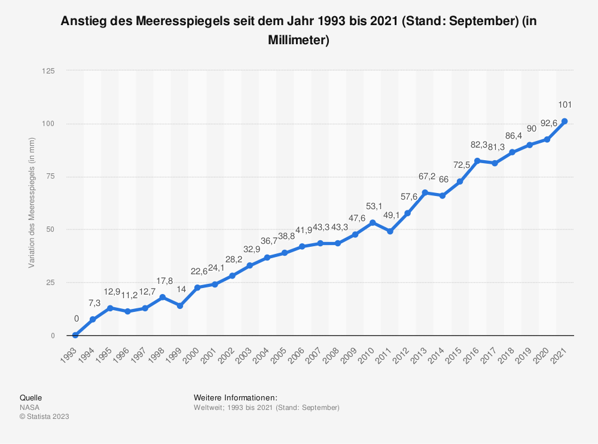
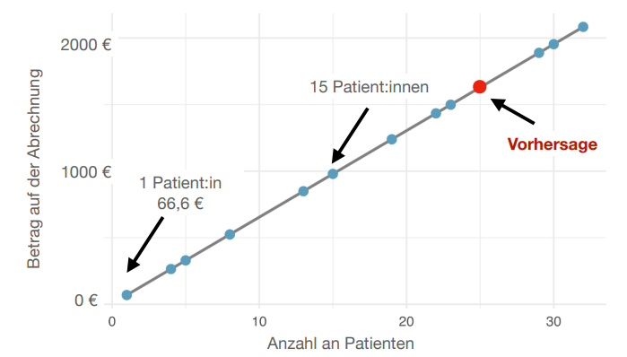

# die Daten können mit diesem Befehl geladen werden
meeresspiegel <- read.csv(file="https://raw.githubusercontent.com/JoseAlanis/amdstatsem/main/data/meeresspiegel.csv")Seminar Fortgeschrittene statistische Methoden II (1)
Termin 3: Lineare Regression
SoSe 2023
Lineare Regression
Das Ziel einer Regression besteht darin, eine Variable durch eine oder mehrere andere Variablen vorherzusagen. An dieser Stelle können wir von einer Art Prognose sprechen. Wenn wir Regressionsmodelle benutzen, wollen wir den Verlauf einer Variable (die abhängige Variable) anhand anderer Variablen (unabhängige Variablen) prognostizieren.
Die vorhergesagte Variable wird Kriterium, Regressand oder auch abhängige Variable (AV) genannt und wird üblicherweise mit \(y\) symbolisiert. Die Variablen, die zur Vorhersage der abhängigen Variablen verwendet werden, werden Prädiktoren, Regressoren oder unabhängige Variablen (UV) genannt. Üblicherweise werden Prädiktoren mit \(x_{1},~x_{2},~x_{3},~\dots\) (oder kurz, mit \(X\)) symbolisiert.
Sie erinnern sich wahrscheinlich an Statistik 1 und 2, wo wir meistens nur einen Prädiktor zur Vorhersage einer anderen Variable benutzt haben. In diesem Fall sprechen wir von einer einfachen Regression. In diesem Fall können wir eine Vorhersage von \(y\) mit der Gleichung der einfachen linearen Regression formalisieren:
\[ y_{m} = b_{0} + b_{1} \cdot x_{m1} + b_{2} \cdot x_{m2} + \dots + e_{m} \tag{1}\]
Hier steht der Index \(\mathbf{m}\) für die Untersuchungseinheit (z.B. für eine Person, oder eine einzelne Messung).
Um die Grundidee eines Regressionsmodells besser zu verstehen, schauen wir uns nun ein kleines Beispiel an.
Beispiel 1: Der Meeresspiegel steigt an
Betrachten Sie die folgende Abbildung:

Was können wir aus dieser Abbildung lernen?
Die Abbildung zeigt, dass der Meeresspiegel kontinuierlich ansteigt. Anhand der abgebildeten Zahlen lässt sich leicht erkennen, dass seit 1993 der Meeresspiegel pro Jahr um mehrere Millimeter angestiegen ist.
Gehen wir davon aus, dass wir die Veränderung im Meeresspiegel, die durch die Abbildung angedeutet wird, möglichst prägnant zusammenfassen wollen. An dieser Stelle stehen uns unterschiedliche Methoden zur Verfügung. Wir könnten sagen:
- “Der Meeresspiegel ist seit 1993 gestiegen”, oder “Der Meeresspiegel steigt seit 1993 um mehrere Millimeter”.
Sobald wir aber eine Aussage über die Ausprägung dieser Veränderung treffen möchten, bräuchten wir eine Methode, die uns erlaubt all die kleinen Veränderungen, welche von Jahr zu Jahr gemessen wurden, zusammenzufassen. Eine Möglichkeit wäre, die gemessenen Abweichungen zu mitteln. Damit könnten wir feststellen, um wie viel der Meeresspiegel im Mittel pro Jahr angestiegen (oder abgefallen ist). Lasst uns diese Berechnung in R durchführen.
Daten: Meeresspiegel
Berechnung: Mittlere Abweichung im Meeresspiegel Daten
# wir können `dplyr` benutzen
# um die mittlere Abweichung zu berechnen
require(dplyr)
meeresspiegel %>%
# Differenz zwischen zwei aufeinaderefolgende Werte
mutate(Abweichung = lead(Anstieg) - Anstieg) %>%
# bilde Mittelwert (schließ Fehlendewerte aus)
summarize(Mittlere_Abweichung = mean(Abweichung, na.rm = TRUE)) Mittlere_Abweichung
1 3.607143Nun können wir die Abweichung im Meeresspiegel genauer Beschreiben:
- Die Abbildung zeigt, dass der Meeresspiegel kontinuierlich ansteigt. Tatsächlich steigt der Meeresspiegel im Vergleich zu 1993 pro Jahr um durchschnittlich 3,6 mm.
Ist die mittlere Abweichung ein guter Schätzer?
Anhand dieser Zahlen liese sich gleich prognostizieren, wie der Meerespiegel in den komenden Jahren verändern wird. Wenn alles so bleibt wie bisher, können wir davon ausgehen, dass der Meeresspiegel weiteransteigen wird. Das sind keine gute Nachrichten.
Eine gute Nachricht ist allerdings, dass lineare Regressionsmodelle, im Prinzip nichts anderes als die mittlere Abweichung zu berechnen, um eine Vorhersage von \(y\) (in unser Beispiel die Abweichung im gemessenen Meeresspiegel) anhand von \(x\) (in unser Beispiel, das Jahr der Messung) vorzunehmen. Die genauen Berechnungsschritte sind ein kleines bisschen komplexer, aber die Logik ist im Prinzip die gleiche.
Wir können dies leicht mit einem linearen Regression in R überprüfen.
Berechnung: Lineare Regression
Wir können eine lineare Regression mit der Funktion lm() in R berechnen.
# lm() nimmt mehrere Argumente. Heute brauchen wir `data` und `formula`
# `data = meeresspiegel` sagt der Funktion wo sich die Daten befinden
lin_reg <- lm(
# `data = meeresspiegel` sagt der Funktion wo sich die Daten befinden
data = meeresspiegel,
# `formula = 1 + Anstieg ~ Jahr` sagt der Funktion wie die Formel unserer
# Regression aussehen soll
formula = 1 + Anstieg ~ Jahr)Mit summary() können wir uns die Ergebnisse der Regression anzeigen lassen:
summary(lin_reg)
Call:
lm(formula = 1 + Anstieg ~ Jahr, data = meeresspiegel)
Residuals:
Min 1Q Median 3Q Max
-10.4157 -2.7138 0.3881 2.3164 7.7297
Coefficients:
Estimate Std. Error t value Pr(>|t|)
(Intercept) -6.728e+03 1.882e+02 -35.75 <2e-16 ***
Jahr 3.375e+00 9.375e-02 36.00 <2e-16 ***
---
Signif. codes: 0 '***' 0.001 '**' 0.01 '*' 0.05 '.' 0.1 ' ' 1
Residual standard error: 4.224 on 27 degrees of freedom
Multiple R-squared: 0.9796, Adjusted R-squared: 0.9788
F-statistic: 1296 on 1 and 27 DF, p-value: < 2.2e-16- Wie kommen diese Zahlen zustande?
- Wie können wir aus vergangenen Beobachtungen zukünftige Beobachtungen vorhersagen?
- Was ist eine gute Vorhersage, und warum sind Vorhersagen mehr oder weniger akkurat?
Schauen wir uns ein weiteres Beispiel an.
Beispiel 2: More patients, more cash!
Stellen Sie sich vor, dass Sie als ambulante Psychotherapeut:in in einer Praxis arbeiten. Am Anfang eines jeden Quartals erstellen Sie eine Kostenplanung. Die erwartete Anzahl an Behandlungsstunden spielt dabei eine große Rolle, da Sie damit den erwarteten Wert Ihres Einkommens berechnen können. Gehen wir davon aus, dass Sie pro Patient:in ein Betrag von 66,6 Euro (nach Abzug aller laufenden Kosten) in der Quartalsabrechnung erwarten können.
Betrachten Sie die folgende Abbildung:

Die Abbildung zeigt einen linearen Zusammenhang zwischen der Anzahl an Patienten und dem Betrag auf der Abrechnung. Wir können dieser Zusammenhang bildlich darstellen (wie in der Abbildung) aber auch mithilfe mit eines Modells.
\[Betrag = (wie~von~x~auf~y~kommen?) + Fehler\]
In unseren Beispiel, welche Funktion muss auf \(x\) angewendet werden, um eine möglichst genaue Schätzung von \(y\) zu bekommen?
Wir können diese Fragen mithilfe einer mathematischen Formel ausdrucken.
\[y = f(x) + Fehler\]
Dies ist die Grundlage eines Regressionsmodells. Regressionsmodelle sind nichts anderes als eine Speziefietzierung dieser Frage. Mit einem Regressionsmodell, können wir die Funktion, die auf \(x\) angewendet werden muss, genauer beschreiben.
Dies ist die allgemeine Formel der Regression:
\[y_{i} = b_{0} + b_{1}~x_{1} + e_{i}\]
- \(b_{0} =\) \(y\)-Achsenabschnitt, Konstante, oder Interzept:
- Der Wert von \(y\) bei einer Ausprägung von 0 in \(x\).
- \(b_{1} =\) Regressionsgewicht des Prädiktors oder die Steigung der Regressionsgerade.
- Interpretation: die Steigung der Geraden lässt erkennen, um wie viele Einheiten \(y\) zunimmt, wenn \(x\) um eine Einheit zunimmt
- \(e_{i} =\) Regressionsresiduum (kurz: Residuum), Residualwert oder Fehlerwert:
- Die Differenz zwischen einem vorhergesagten (\(\hat{y}\)) und beobachteten (\(y\)) \(y\)-Wert.
- Je größer die Fehlerwerte, umso größer ist die Abweichung eines beobachteten vom vorhergesagten Wert.